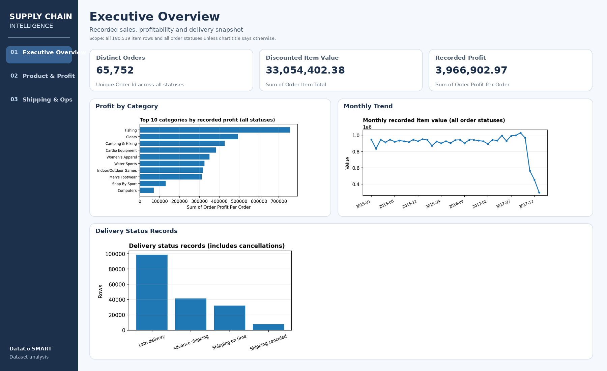
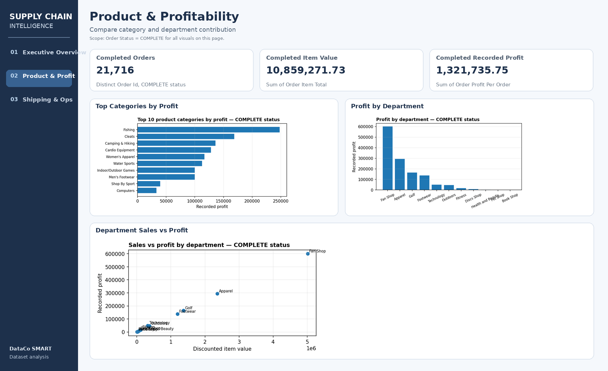
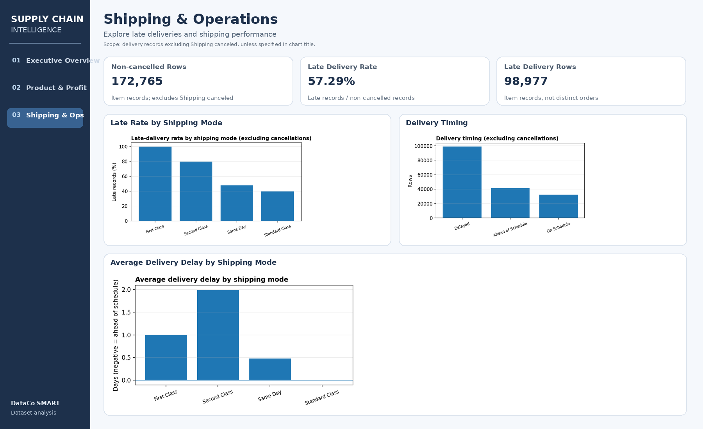
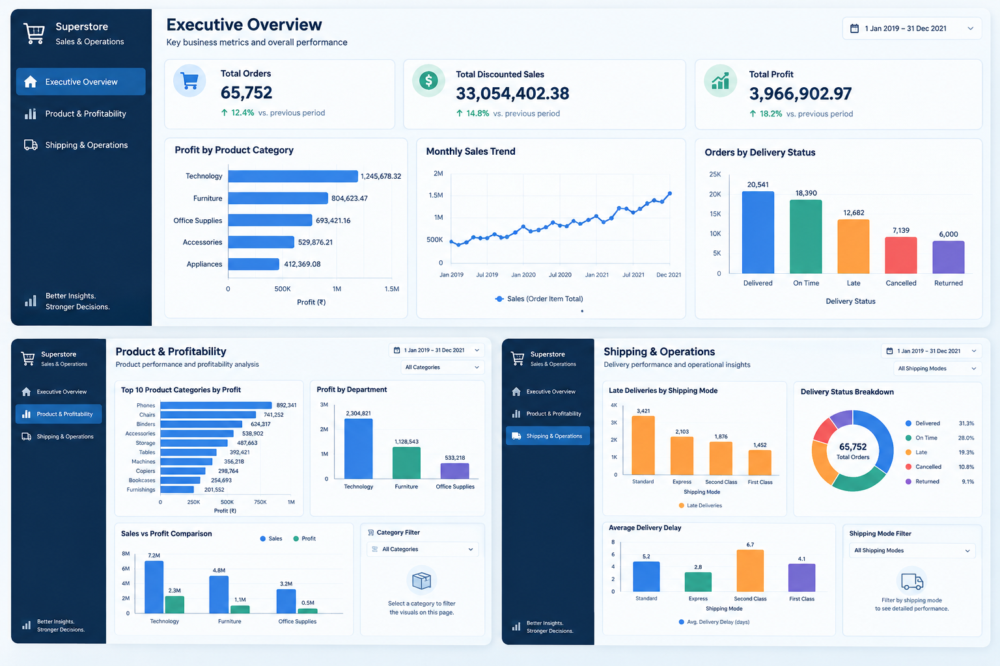

Data Analysis
Data Cleaning · Exploratory Data Analysis · KPI Analysis · Data Visualization · Reporting
HELLO, I'M
B.Sc. Information Technology graduate with hands-on project experience turning structured data into clear analysis, meaningful KPIs and business-focused dashboards.
I’m a B.Sc. Information Technology graduate from PSG College of Arts & Science with an academic score of 83.6% and practical experience through data analytics projects.
My work spans supply chain operations, retail sales, customer churn and employee attrition. Across these projects, I have worked with data preparation, SQL querying, exploratory analysis, KPI development and dashboard reporting using tools listed in my resume.
I enjoy structuring messy information, investigating patterns and presenting findings in a way that is clear and useful to business stakeholders.
A practical toolkit grounded in project work and academic learning.
Data Cleaning · Exploratory Data Analysis · KPI Analysis · Data Visualization · Reporting
SQL · MySQL · Joins · Aggregations · CTEs · Window Functions
Python · Pandas · NumPy · Matplotlib
Power BI · Power Query · DAX · Data Modeling · Interactive Dashboards
Pivot Tables · VLOOKUP · IF · SUMIF · COUNTIF · Jupyter Notebook · Git · GitHub
Four practical analytics projects exploring operational, commercial, customer and people data.
An end-to-end analysis of supply chain records to examine delivery performance, inventory patterns, order profitability and operational KPIs.
*Among non-cancelled delivery records, as reported in the resume.



Analyzed 9,994 retail records to examine sales, profitability, product categories, regional trends and performance over time. Cleaned transaction data and developed Power BI visualizations for business comparison.

Used SQL to analyze customer churn and retention patterns. Calculated a 26.54% overall churn rate and developed an interactive Power BI dashboard with dynamic DAX measures, filtering and churn risk indicators.
Examined employee attrition across demographic and job-related attributes. Built a multi-page Power BI dashboard covering executive insights, employee demographics and attrition analysis, supported by DAX KPI measures.
View dashboard gallery ↗
Project summaries and metrics reflect the supplied resume. Illustrative previews are clearly marked and are not represented as actual dashboard screenshots.
Robomattic (A Division of CADD Technologies)
PSG College of Arts & Science
Coimbatore · 2023–2026
Interested in entry-level Data Analyst opportunities and meaningful work with data. I’d be glad to connect.
swethaak1405@gmail.com ↗Coimbatore, Tamil Nadu, India